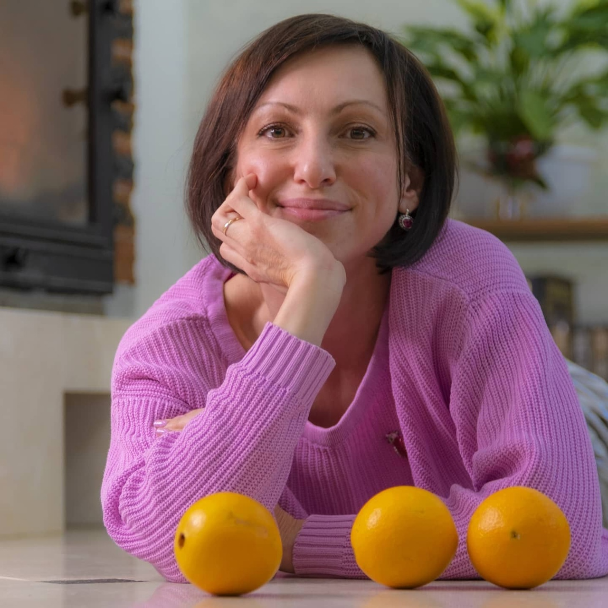
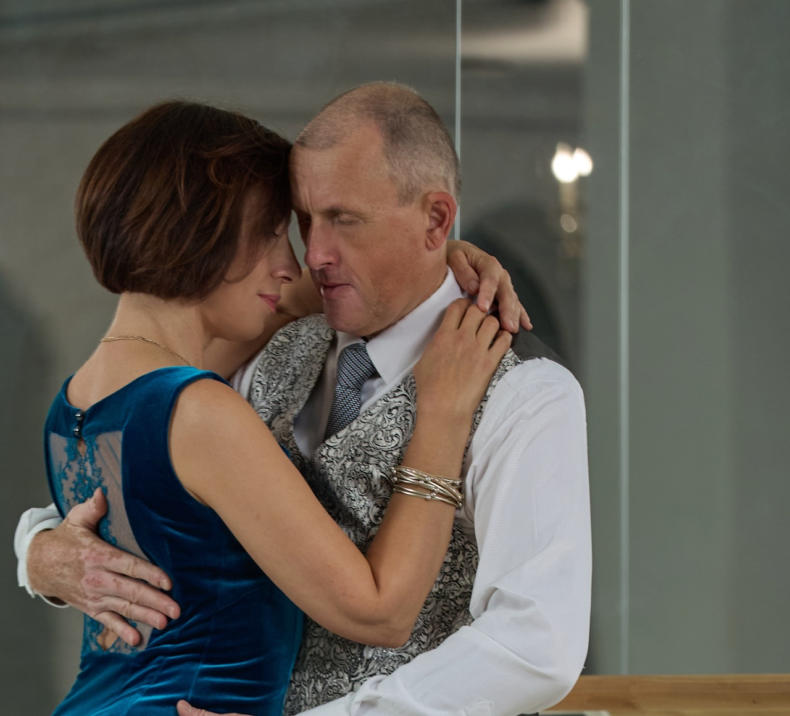
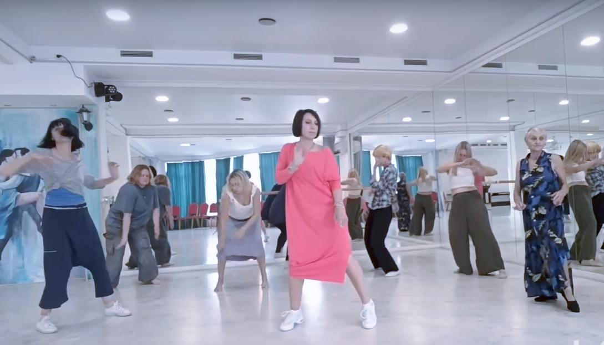

Что делать, если у тебя особенная и сложная ниша?
Это как раз случай нашей ученицы Ольги Сенновой. У нее танцевальный клуб. Это не татуировки, не фотографии, не бьюти индустрия.
Хотя маркетинг работает в любой нише, где есть конкуренция и спрос. Так же, как и наша система «ВК-Бабло» подходит для разных ниш.
Вот интервью Ольги, в котором она поделилась своей историей.

— Расскажи, какая была ситуация до курса Вк бабло?
— До курса ВК-бабло я была в растерянности. У меня очень разношерстная аудитория, разные активности и они закрывают разные потребности у людей.
Я сливала бюджет на таргетированную рекламу в попытках охватить вниманием каждого потенциального клиента.
—Сколько примерно времени ты билась вот так без результатов в ожидании клиентов?
—С февраля по август 2023 года.
— То есть полгода ты билась с ветряными мельницами. Какие сложности были во время обучения на нашем курсе? Насколько сложно было учиться? За сколько прошла обучение?
— Очень большой объем материала, мне приходилось совмещать свою работу и обучение именно в самый пик активности клуба.
Времени сильно не хватало, внимание тоже было рассеяно. Я до сих пор не сделала последний урок.
Хотя, по прошествии 4х месяцев информация начала как-то приходить в стройную систему в моей голове. Почувствовала ритм маркетинга)

— Каково было работать с куратором, что было полезно, мотивировало ли это тебя? Как считаешь, без куратора получилось бы так же?
— С куратором я чувствовала поддержку и уверенность, что у меня все получится. Она здорово меня корректировала, подбадривала, очень конструктивно критиковала и давала советы.
Без куратора точно не получилось бы того, что получилось.
— Какие сейчас действия делаешь для привлечения клиентов? Как часто пишешь посты? Запускаешь ли рекламу?
— Я научилась прокачивать какое-то одно направление, не боясь, что остальные останутся без внимания.
Да, рекламу делаю. Для разных аудиторий, прогреваю постами, расставляю двери и приманки. Все как вы учили.
— А можешь поделиться, как изменилась жизнь, когда увеличился доход?
— Я устроила себе турне Сочи-Стамбул-Подгорица, по прилёту провела большой мастер-класс по танцевальной биомеханике джаззо.

Позволила себе привезти в Иркутск основателей этого направления.
Собрала больше 50 человек. Сделала рекламу на радио и в топовых новостях.
— Сколько сейчас зарабатываешь? Сколько в среднем в месяц?
— Я начала свой бизнес в феврале 2023 года. Выручка клуба за 11 месяцев составила чуть меньше двух миллионов.
Начиная с сентября 2023 выручка начала расти от 45000 тысяч до 300000 в месяц.
У нас сейчас около 80 постоянных клиентов, которые берут абонементы и регулярно ходят на занятия. Каждый месяц группы становятся больше. Сначала группы были по 3-4 человека. Сейчас 7-10. Открылись 2 новых направления.
*****
Чтобы получить результат, в любой, еще разок, в любой нише, нужно приложить усилия. И заниматься маркетингом и продажами.
ВКонтакте сейчас практически единственная соцсеть, в которой можно настроить управляемый поток клиентов.
При этом, не нужно каждый день снимать сторисы и записывать видео. Достаточно делать четкие пошаговые действия, по которым мы проведем тебя за ручку в курсе ВК-Бабло.